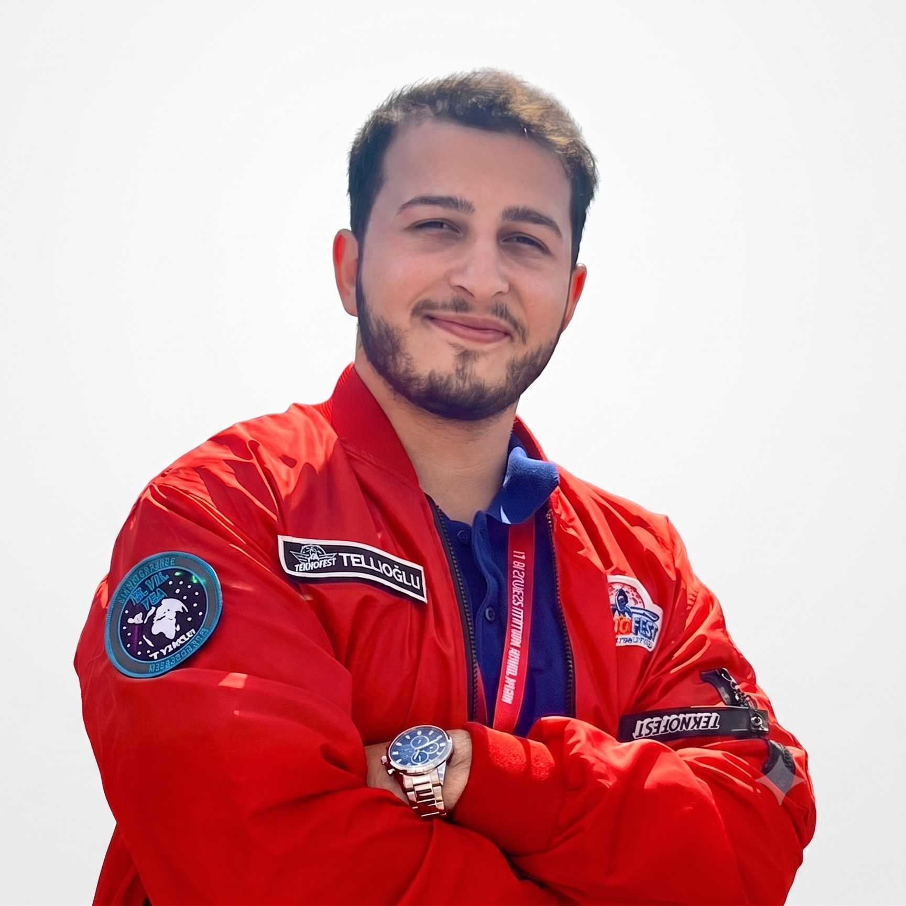

Mobil Uygulama Çalışmaları
Flutter & Dart ile geliştirdiğim ders ve dönem projeleri.
İş fırsatlarına açığım
Sivas, Türkiye — Yazılım Geliştirici
Merhaba, ben Emre Tellioğlu. Bilişim Sistemleri ve Teknolojileri mezunu bir geliştiriciyim; mobil uygulamalardan yapay zekâ modellerine kadar uçtan uca proje yürütüyorum. Benim için önemli olan teknolojinin kendisi değil, çözdüğü gerçek problemdir.

Yazılım geliştirme sürecinin fikir aşamasından ürünün hayata geçmesine kadar her adımında deneyim kazandım. Mobil ve web uygulama geliştirme, yapay zekâ ve makine öğrenmesi, veri analizi ve veritabanı yönetimi üzerine projeler yürüttüm.
TEKNOFEST yarışmalarında elde ettiğim Türkiye dereceleriyle pekişen takım liderliği, problem çözme ve analitik düşünme becerilerimi; erişilebilirlik, eğitim, siber güvenlik ve tarım teknolojileri gibi farklı alanlarda somut çözümlere dönüştürdüm. Yeni teknolojileri hızla öğrenen, takım çalışmasına yatkın ve işini titizlikle bitiren bir geliştiriciyim.
Python · C# · Dart · SQL · JavaScript · HTML/CSS
Flutter · Unity · React · Scikit-learn · Pandas
Firebase (Firestore, Auth) · PostgreSQL · REST API
Git & GitHub · VS Code · Android Studio · OOP · Veri Ön İşleme
Takım çalışması · Takım liderliği · Proje yönetimi · Problem çözme · Analitik düşünme · Sunum & iletişim · Hızlı öğrenme · Uyum sağlama · Sorumluluk · Çözüm odaklılık
TEKNOFEST 2025 Engelsiz Yaşam · Takım Kaptanı
Proje yol haritası ve görev dağılımını yöneterek takımı temsil ettim. Firebase ve yapay zekâ tabanlı bir eşleştirme algoritmasıyla kullanıcı profillerine göre en uygun bakıcı–birey eşleşmesini otomatikleştirdik.
Firebase · Yapay Zekâ · Eşleştirme Algoritması · Mobil
TEKNOFEST 2025 KKTC Tarım · Takım Kaptanı
Takım içi koordinasyon ve proje takvimini yönettim. Python, Scikit-learn ve Pandas ile veri ön işleme, model eğitimi ve tahminleme süreçlerini tamamladık.
Python · Scikit-learn · Pandas · Veri Analizi
TEKNOFEST 2024 TÜBİTAK · Geliştirici
Flutter ile arayüzü, Python ile sunucu tarafını geliştirdim. OCR ile metne çevrilen URL'leri eğittiğimiz Random Forest modeliyle analiz ederek %98 doğruluk oranına ulaştık.
Flutter · Python · OCR · Random Forest · Scikit-learn
TEKNOFEST 2023 TÜBİTAK · Takım Kaptanı
Bilimsel "Aralıklı Tekrar" tekniğine dayanan bir mobil oyun tasarladık. Unity ve C# ile kullanıcının öğrenme hızına adapte olan dinamik bir algoritma geliştirerek kalıcı öğrenme deneyimi sunduk.
Unity · C# · Oyunlaştırma · Aralıklı Tekrar
Tasarım ve Yazılım Ekibi Üyesi
Roketin aviyonik sistemleri için yazılım geliştirme ve donanım entegrasyon süreçlerine takım olarak katkı sağladım.
Aviyonik · Yazılım · Donanım Entegrasyonu
Lisans eğitimim boyunca, yarışma projelerimin yanında pek çok ders, dönem ve final projesi geliştirdim. Bu çalışmalarda farklı teknolojileri uygulamalı olarak pekiştirdim.
Flutter & Dart ile geliştirdiğim ders ve dönem projeleri.
PostgreSQL ve SQL ile veri modelleme ve uygulama projeleri.
Python, Scikit-learn ve Pandas ile veri analizi ve model denemeleri.
TEKNOFEST İstanbul
Festival tarihinin en büyük etkinliğinde etkinlik akışının takibi ve saha problemlerinin çözümü.
Teknoloji odaklı seminerler, atölyeler ve sosyal etkinlikler düzenleyerek öğrenci katılımını artırdım.
Öğrencilerin akademik ve idari konulardaki görüşlerini yönetim kuruluna ileterek iletişimi güçlendirdim.
Öğrenci hakları ve yönetmelikleriyle ilgili karar alma süreçlerine katkıda bulundum.
Yeni fırsatlara ve iş birliklerine açığım. Bir pozisyon ya da proje için benimle iletişime geçmekten çekinmeyin.